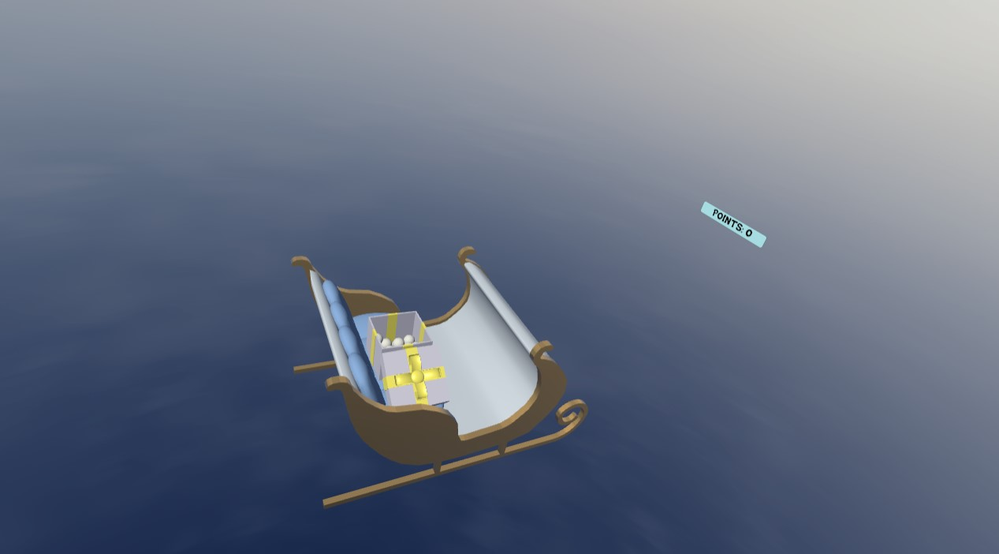
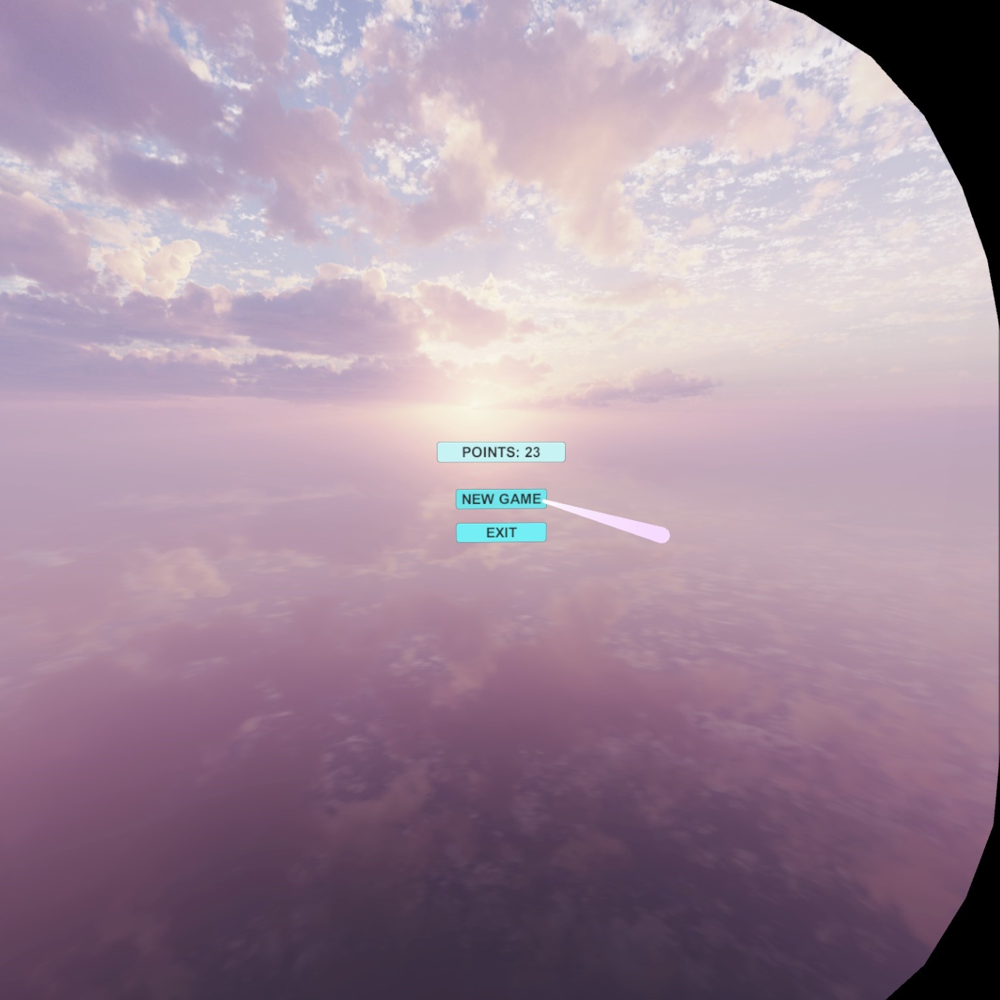

snowballs
This VR game was developed for Oculus Quest 2. Using the OpenXR API, I added the Oculus Touch interaction profile for both Windows and Android builds, and implemented interactions with Unity’s XR Interaction Toolkit. All 3D models were created by me in Blender.

The game is designed as a skill‑based experience. The player collects snowballs and throws them at moving Christmas decorations, earning points for accurate hits and losing points for missed throws. Each snowball can only be used once, and the game ends when the player has used all available snowballs.

The supported mode is standing play, where the user has enough room to stand and make small movements within roughly a one‑metre radius. This approach also helps make the game more comfortable for players who are prone to simulator sickness.